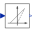

ControlControl components for DC to DC converters |
|
Package Contents
|
Generates a pulse width modulated (PWM) boolean fire signal |
|
|  |
Linearly transforms voltage to duty cycle |
Information
This information is part of the Modelica Standard Library maintained by the Modelica Association.
Currently there is only one PWM method provided in this library.